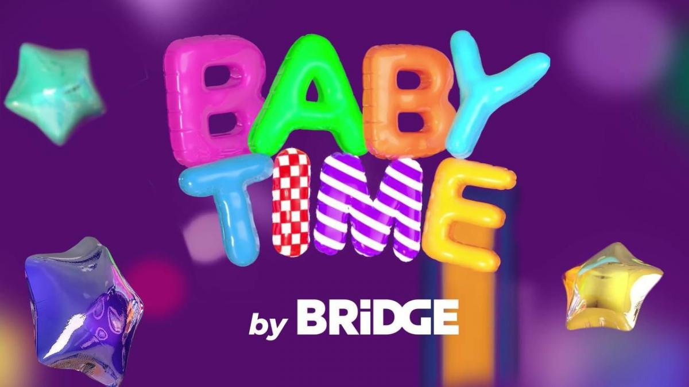
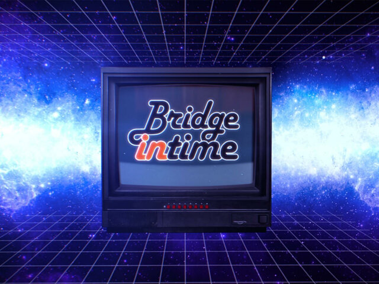
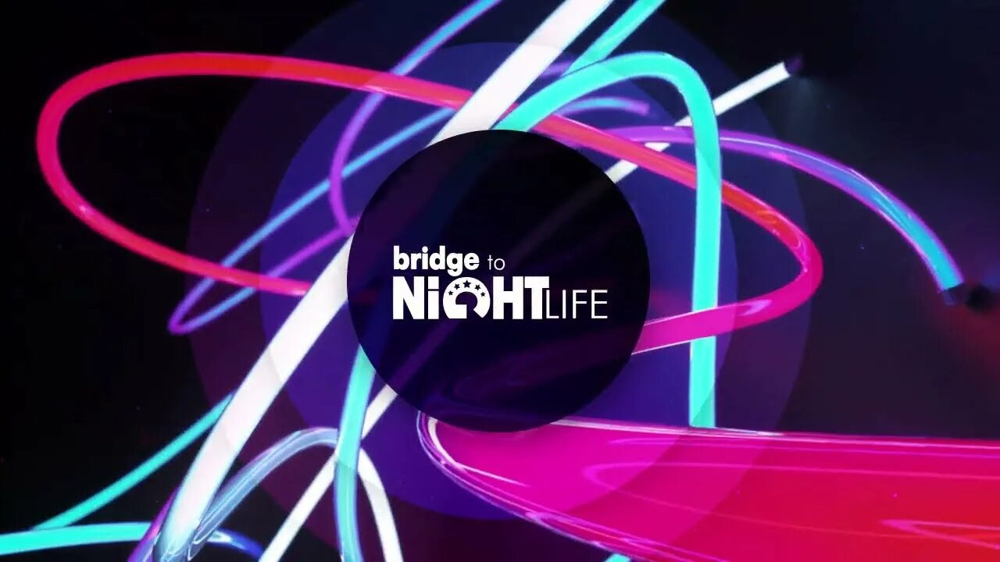
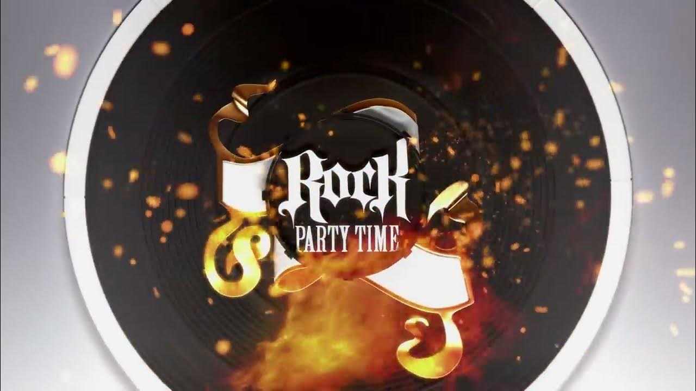
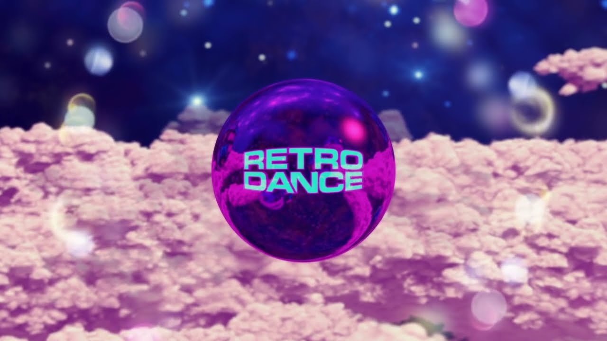
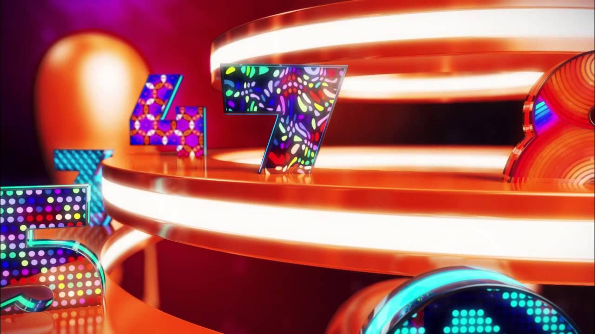
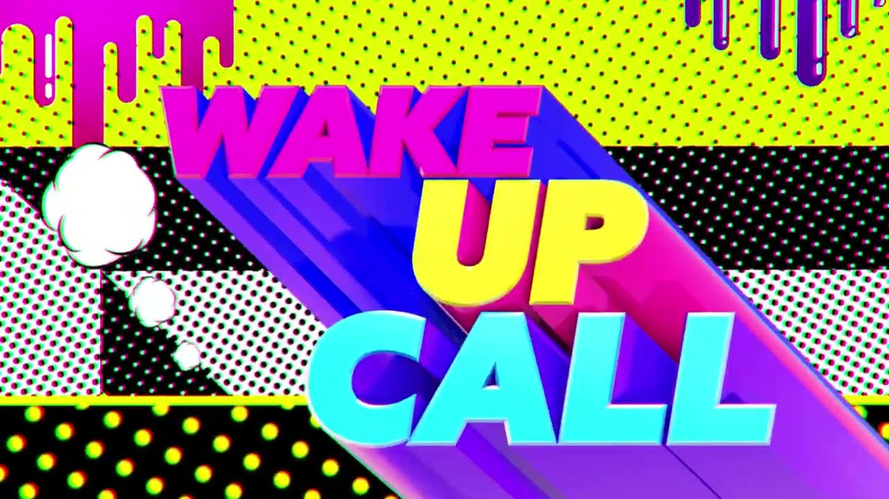

📺 Shows
Original programmes from BRIDGE TV before 2016

Daily block of children's music videos and animated clips for the youngest viewers. A gentle, colourful start to the day.

A journey through musical decades — archive concert recordings, rare performances and the golden hits of the 70s, 80s and 90s.

Late-night programme dedicated to club culture, dance music and the best DJ sets. The channel's signature after-dark show.

Rock music across all genres and generations — from classic to alternative.

The best foreign dance hits of the late 80s, 90s and early 2000s. Pure nostalgia — the tracks that defined the dancefloor for a generation.

The channel's weekly music chart — ten tracks voted by viewers via SMS. The pulse of what the BRIDGE TV audience was listening to.

The morning show — upbeat clips and positive vibes to kick off the day. Light, energetic and perfect for the early hours.